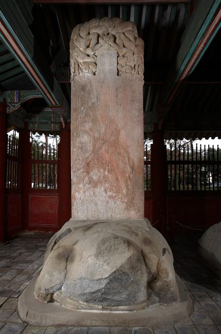

태종 이방원
"칼과 붓을 동시에 쥔 천재, 조선의 기틀을 완벽히 다지다."

- 이름: 이방원 (李芳遠)
- 특징: 태조의 아들 중 유일한 문과 급제자 (16세에 진사시 합격, 17세에 문과 급제). 무장 출신인 가문에서 유일하게 뛰어난 학문적 재능(文才)을 가짐.
- 배우자: 원경왕후 민씨 (여주 민씨, 민제의 딸)
- 재위 기간: 1400년 ~ 1418년
- 대표 업적
- 육조직계제 실시를 통한 국왕 중심의 중앙집권화
- 사병 혁파 및 군사권 통합을 통한 왕권 강화
- 호패법 시행을 통한 인구 파악 및 국가 재정 정비
- 신문고 설치를 통한 백성의 억울함 해결
1. 조선 개국의 일등 공신과 시련
- 정몽주 살해 (1392년): 아버지 이성계가 사냥 중 낙마하여 위기에 처하자, 개국의 가장 큰 걸림돌이었던 고려의 마지막 충신 정몽주를 조영규 등과 함께 선죽교에서 살해하며 개국의 결정적 계기를 마련함.
- 권력에서의 배제: 조선 건국 후 지대한 공을 세웠음에도 불구하고, 정도전과 신덕왕후 강씨에 의해 개국공신과 세자 책봉에서 제외되며 정치적 소외감을 겪음.
- 명나라 외교 활약 (1394년): 명나라 홍무제를 직접 만나 여진족 유인 오해를 풀고 외교적 의구심을 해결하는 대범함을 보임.
2. 두 번의 왕자의 난과 왕위 등극
- 제1차 왕자의 난 (1398년): 정도전의 사병 혁파 움직임과 막내 방석의 세자 책봉에 반발하여, 정도전·남은 등을 숙청하고 세자 방석을 제거하여 실권을 장악함 (이후 형 정종이 즉위).
- 제2차 왕자의 난 (1400년): 왕위 계승을 노린 넷째 형 이방간과의 치렬한 개성 시가전에서 승리하여 완전히 반대 세력을 소멸시키고 세자에 책봉됨.
- 왕위 등극: 1400년 11월, 형 정종의 양위를 받아 조선의 제3대 임금으로 즉위함.
3. 주요 업적 (중앙집권과 제도 개혁)
- 왕권 강화 시스템 구축: 사병을 완전히 혁파하여 군권을 국가(삼군부)로 일원화함. 도평의사사를 폐지하고 의정부를 설치했으며, 국왕이 육조를 직접 관장하는 육조직계제(1414년)를 시행해 왕권을 극대화함.
- 지방 행정 정비: 8도 체제를 정비하고(서북면 -> 평안도, 동북면 -> 영길도 등), 군·현의 명칭을 정리하여 중앙집권적 체제를 완성함.
- 한양 재천도와 도성 정비 (1405년): 개성으로 갔던 수도를 한양으로 다시 옮기고, 창덕궁과 경회루, 돈화문을 건설함. 대대적인 청계천(개천) 준설 공사를 통해 도성의 면모를 완성함.
- 국가 재정 확보: 대대적인 불교 개혁을 단행해 사찰의 토지와 노비를 몰수하여 국고로 환수함. 전국적인 양전 사업(토지 조사)을 통해 120만 결 이상의 세원을 확보함.
- 명나라와의 안정적 외교: 조공-책봉 관계를 안정적으로 구축하여 선진 문물(서적, 약재 등)을 수입함.
4. 피의 숙청과 세종으로의 양위
- 철저한 외척·공신 숙청: 아들의 미래 왕권에 걸림돌이 될 만한 세력은 사돈, 처가, 공신을 가리지 않고 제거함. 사돈인 이거이 부자 유배, 처남들인 민씨 4형제(민무구·민무질·민무휼·민무회) 사사, 오른팔이었던 이숙번까지 축출함.
- 과감한 세자 교체: 첫째 아들 양녕대군이 모범적이지 못하자 과감히 폐위하고, 셋째 아들 충녕대군(세종)을 세자로 삼아 왕위를 물러남(1418년).
- 마지막 임무: 상왕으로 물러난 후에도 세종의 장인인 심온을 제거하여 아들이 마음껏 정치를 펼칠 수 있도록 모든 정치적 피를 자처함. 1422년 승하하여 현재 서울 서초구 헌릉에 안장됨.